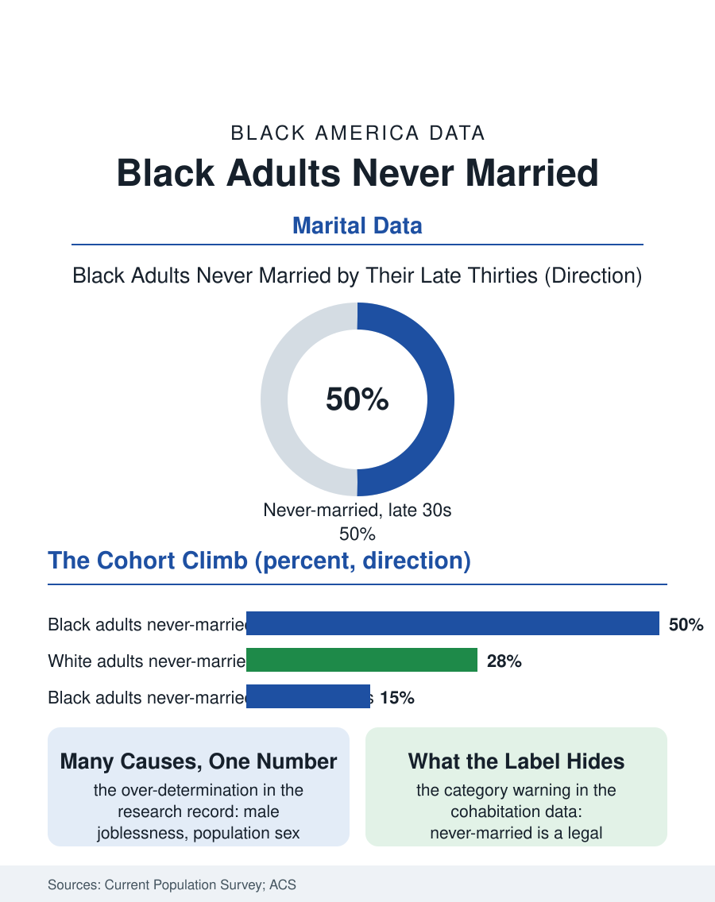

Black Census
The Receipt: Black Adults and the Never-Married Share
Half of Black adults reach their late thirties never married, an over-determined statistic of labor markets, sex ratios, and changing norms. The never-married file.

Marriage's retreat in America is usually told as a recent and general story; in the Black data it is an older and deeper one, and its clearest measure is the never-married share: the proportion of adults who reach middle age without having married at all. In the recent census data, roughly half of Black adults in their late thirties have never married, a share roughly double the white figure at the same age and triple the level recorded two generations ago. This article reads the never-married file.
The Cohort Arithmetic
The Current Population Survey's marital history tables let the file be read by cohort, and the cohort reading is the honest one. Each successive generation of Black adults has reached every age milestone with a higher never-married share than the generation before, and the shares do not fully converge with age: the late marriers close part of the gap in their forties and fifties, the data show a meaningful stream of first marriages at ages the other populations rarely marry, but a substantial share of the elevation persists across the life course, so that the never-married share among Black Americans in their early sixties now stands at levels the mid-century data recorded for no group. The gender composition within the file differs by education in the pattern the marriage file details: among college-educated Black adults the never-married share is elevated for women relative to comparably educated men in the marriage market's arithmetic, reflecting the educational gender gap's downstream; among adults without degrees, the elevation is heavier for men, tracking the employment and earnings files. Geography adds its contour: the never-married shares run highest in the urban Northeast and Midwest, lowest in the South, inverting the map of overall Black population growth, since the southern metros gaining Black population are gaining disproportionately married and marrying migrants.
Explaining Without Reducing
The research literature on the trend is large, and the file's discipline is to hold its findings at their proper weight. The economic account is the strongest single thread: the marriage market runs on the supply of employed, stably earning partners, and the deindustrialization of the Black urban workforce, the male joblessness file, removed a generation of marriageable earnings from the market at exactly the decades the trend steepened, an account whose statistical support is broad. Mortality and the criminal legal system removed men from the market in the literal demographic sense, skewing the adult sex ratio in the communities where the never-married shares run highest, a mechanical effect the demographers can compute directly from the population counts. The cultural account, changing norms, women's economic independence, the declining social penalty on unmarried life, operates across all populations and explains the general rise better than the racial difference. What the literature resists, and this file follows it, is any single-cause reading: the never-married share is where the labor file, the health file, the education gender gap, and the culture's genuine evolution all arrive at once, and its level is over-determined, which is another way of saying it will not be moved by any one lever.
The Households the Category Hides
The file's last chapter is a warning about its own category. Never-married is a legal status, not a household description, and the census's own cohabitation data show a substantial share of never-married Black adults living in committed partnerships, raising children in two-parent households the marital tables file as single-parent. The category also conceals the kinship density this atlas keeps recording: the never-married aunt anchoring the extended family's childcare, the never-married son in the multigenerational house caring for the parent, lives whose family substance the marital file does not capture. The policy stakes of the misreading are real: programs built on the marital statistic aim at the wedding, while the household data suggest the operating units are broader and more various, and the economic facts that matter to children, two earners' presence, stability, kin investment, track the household more faithfully than the license. The trend's forward path, on the cohort arithmetic, is continued elevation before stabilization, as the youngest cohorts carry higher shares into middle age. The never-married file closes on the statistic's proper use. Read as a moral temperature, it misleads; read as a market signal, it reports the price of admission to a legal status whose prerequisites, stable work, housing, a partner pool unthinned by the century's policies, were systematically taxed in Black America. The share is the receipt. The file, like the demographers who built it, files the receipt without confusing it for the people.
More in Black Census
The Black Population of the United States: Size, Definitions, and Distribution
The Black population of the United States totals 52.8 million — 15.4 percent of the nation. How the Census Bureau defines and counts the population, and where it lives.
Black Median Household Income in the United States
Black median household income stands at $56,490 in the Census Bureau's annual income report — how the figure is measured, how it compares, and what drives it.
The Black Poverty Rate: Levels, Children, and the Long Trend
The official Black poverty rate is 17.1 percent — against 11.1 percent nationally and 7.7 percent for non-Hispanic White Americans. How poverty is measured and what the data show.
Source: U.S. Census Bureau, Current Population Survey marital status tables; American Community Survey; demographic research on marriage markets.